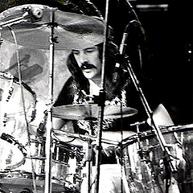
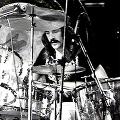

História da banda
Led Zeppelin foi uma banda britânica de rock formada em Londres, em 1968. Consistia no guitarrista Jimmy Page, no vocalista Robert Plant, no baixista e tecladista John Paul Jones e no baterista John Bonham. Seu som pesado e violento de guitarra, enraizado no blues e música psicodélica de seus dois primeiros álbuns, é frequentemente reconhecido como um dos fundadores do heavy metal. Seu estilo foi inspirado em uma grande variedade de influências, incluindo a música folk, psicodélica e o blues.
O riff da música whole lotta love foi elegido como o riff que representa rock and roll, Jimmy Page é considerado um dos maiores guitarristas da história e John Bonham considerado um dos melhores bateristas do mundo.
A banda é considerada uma das mais lendárias do rock and roll, atualmente não está mais ativa, mas seu som ficará eternizado para sempre.
O guitarrista Jimmy Page é citado frequentemente por conta de seu envolvimento com o ocultismo, Page é um colecionador de livros de ocultismo e parafernália relacionadas, chegou ao ponto de comprar um castelo que havia sido a residência de Aleister Crowley.

 
